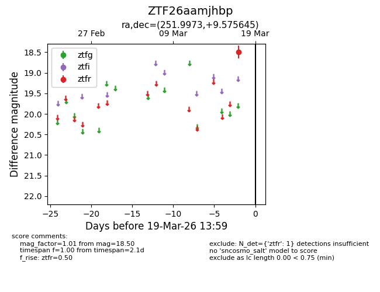
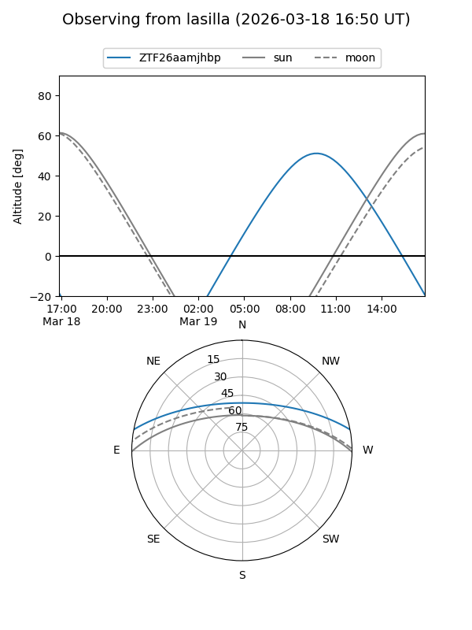
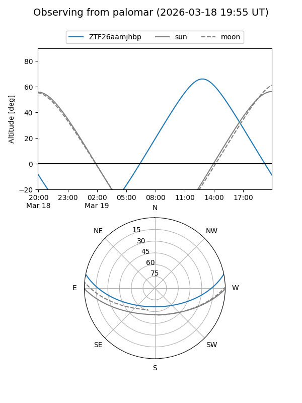

ZTF26aamjhbp
Target ZTF26aamjhbp at 2026-03-19 14:01
Aliases and brokers:
FINK: link
Lasair: link
ALeRCE: link
alt names
ZTF26aamjhbp (ztf,fink_ztf)
Coordinates:
equatorial (ra, dec) = 251.9973,+9.57564
equatorial (HMS+DMS) = 16:47:59.34,+09:34:32.32
galactic (l, b) = (27.3584,+31.73785)
Flags:
Photometry:
last ztfr=18.50
1 ztfr detections
Lightcurve

Visibility


Additional plots